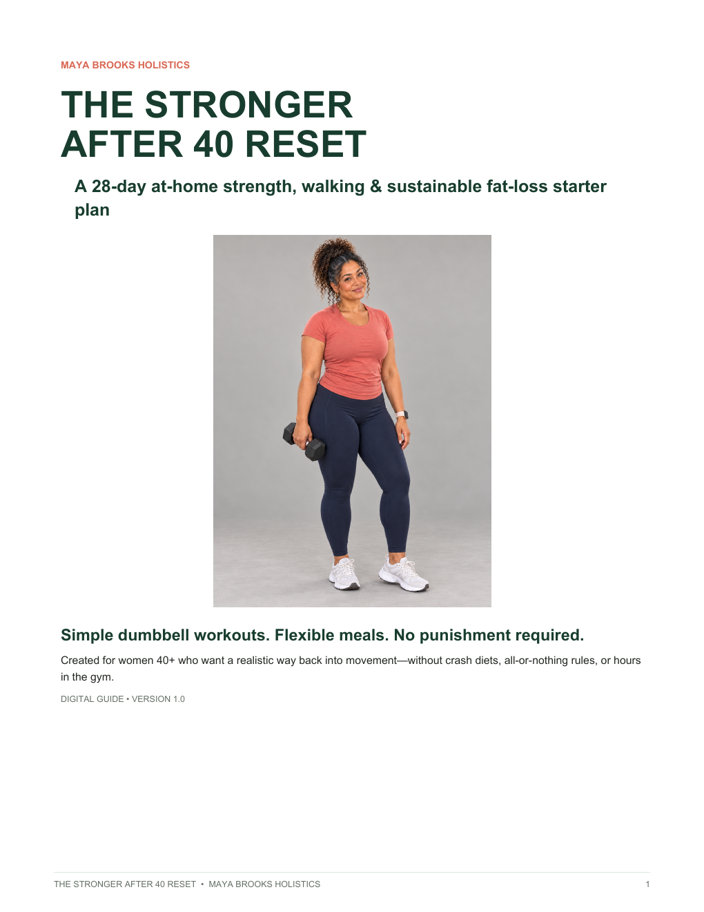
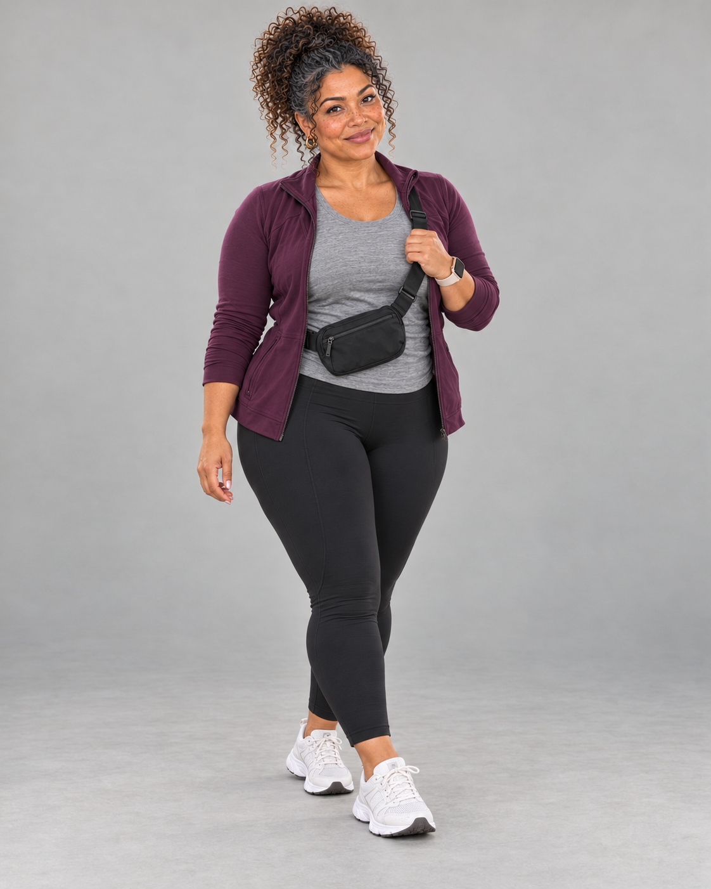
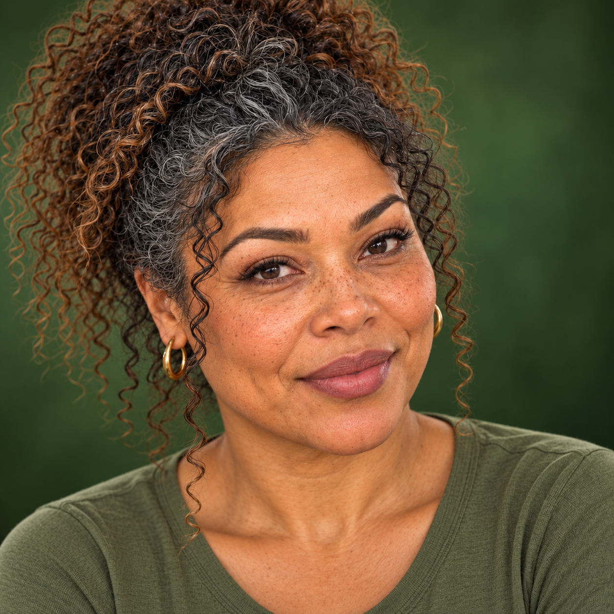

Week 01
Start where you areLearn
Build confidence with simple movement patterns and comfortable rounds.
Your body changed. Your plan should too.
A calm, doable 28-day reset for women ready to rebuild strength, energy, and trust in themselves—at home.
You don’t need to shrink yourself to take up less space.
One month. One clear rhythm.
Three focused workouts each week. Walking and recovery between. Food guidance that leaves room for dinner with your family.
See everything you get →Build confidence with simple movement patterns and comfortable rounds.
Repeat the moves, add a little time, and let familiar become capable.
Add reps, resistance, or a round—never all three at once.
Notice what changed, celebrate non-scale wins, and choose your next step.
Your complete 28-day digital reset
Your step-by-step calendar, at-home training system, flexible meal framework, and progress journal work together as one beautifully designed experience.

What changes in 28 days?
Every day has a clear next action, including recovery.
You practice movements that make daily life easier.
A flexible plan makes showing up possible on imperfect days.

This is for you if…
✓You’re 40+ and returning to exercise
✓You want short workouts at home
✓You need joint-conscious options
✓You’re exhausted by extreme diets
✓You want structure without obsession
Not for you? This is not medical treatment, an advanced lifting plan, or a promise of rapid weight loss.
One program. Four weeks of direction.

Meet Maya
Maya Brooks is a virtual wellness creator for women who want stronger habits after 40—without pretending real life is perfectly scheduled or perfectly disciplined.
Her approach is practical, body-respectful, and evidence-informed. She is not a medical professional; the program is educational rather than individualized care.
Your next 28 days can look different.
Get instant access to The Stronger After 40 Reset and take the first doable step today.
Before you begin
No. Use a sturdy chair, supportive shoes, and dumbbells or securely held household alternatives.
No. It is general fitness and habit education, not diagnosis or treatment.
Results vary. The program supports sustainable behaviors but guarantees no particular weight change.
Speak with a qualified clinician before starting and seek individualized modifications.